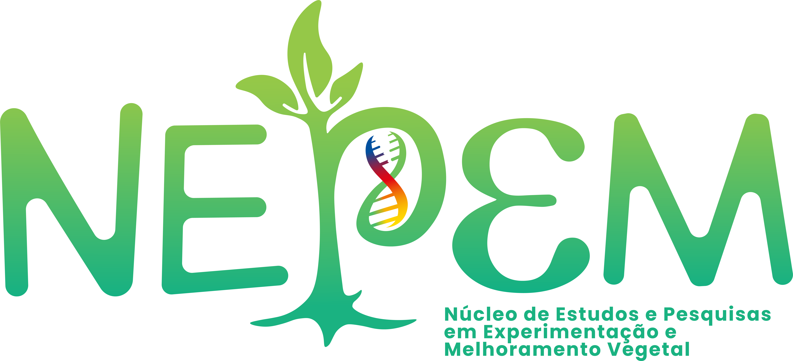

Sobre o NEPEM
Informações institucionais, manuais e regimentos organizados.
NEPEM — Quem Somos
O NEPEM (Núcleo de Estudos e Pesquisas em Experimentação e Melhoramento Vegetal) é um núcleo vinculado ao Departamento de Fitotecnia do Centro de Ciências Agrárias da Universidade Federal de Santa Catarina (UFSC), campus de Florianópolis/SC.
Nosso núcleo desenvolve pesquisas de ponta nas áreas de estatística experimental e biometria vegetal, com foco no melhoramento genético de espécies funcionais e no desenvolvimento de novas ferramentas tecnológicas. Atualmente, o grupo coordena importantes programas de pesquisa, como o Programa de Melhoramento Genético de Linhaça no sul do Brasil.
Nossos Objetivos Estratégicos
- Formação de recursos humanos qualificados em nível de pós-graduação e graduação nas ciências agrárias.
-
Inovação biométrica por meio do desenvolvimento de softwares abertos (pacotes
R como
metan,plimaneplimanshiny). - Aplicação de fenotipagem digital de alto rendimento por meio de drones, Inteligência Artificial e processamento avançado de imagens agrícolas.
- Transferência de tecnologia e prestação de consultoria especializada a órgãos agrícolas e empresas do setor.
Estrutura Organizacional
A estrutura organizacional do NEPEM é composta por uma Coordenadoria Geral, uma Coordenadoria Científica e Assessorias de Apoio, conforme representado no fluxograma oficial abaixo:

A Coordenadoria Geral é exercida pelo Prof. Tiago Olivoto, responsável pela supervisão das atividades científicas, acadêmicas e de extensão do grupo, bem como sua representação junto a instâncias da UFSC e parceiros externos.
A Coordenadoria Científica é liderada por estudantes nomeados, sendo responsável por supervisionar a execução prática dos eixos científicos de atuação.
Eixos Científicos de Atuação
Melhoramento
Desenvolvimento de espécies funcionais e genótipos de alta produtividade (linhaça e girassol).
Experimentação
Condução de ensaios agrícolas rigorosos, envirotipagem e biometria estatística computacional.
Tecnologia
Fenotipagem de plantas com uso de sensoriamento remoto, inteligência artificial e visão computacional.
Regimento Interno
O funcionamento científico, administrativo e de parcerias do NEPEM/UFSC é regido por seu Regimento Interno oficial, aprovado pela coordenação e conselhos competentes. Ele disciplina as atribuições dos membros coordenadores, a entrada de novos integrantes e as diretrizes gerais de produção.
Consulte ou Baixe o Documento Completo
O arquivo PDF oficial contém todas as cláusulas e o estatuto do núcleo de pesquisas. Recomenda-se a leitura por todos os novos estudantes e parceiros institucionais.
Baixar Regimento Interno (PDF)Manual de Identidade Visual
Este manual apresenta as diretrizes oficiais para o uso correto da marca do NEPEM/UFSC, visando garantir sua consistência e legibilidade em todas as suas publicações, cartazes, slides e mídias sociais.
Paleta de Cores Oficial
A marca é baseada primariamente em tons de verde ecológico, combinados com preto, branco e as cores acadêmicas oficiais da UFSC.
Versões do Logotipo (Download)
| Modelo | Visualização | Arquivos para Download |
|---|---|---|
| Colorido Principal |
 |
PNG SVG |
| Ícone Isolado |
|
PNG SVG |
| Branco (Fundos Escuros) |
 |
PNG SVG |
| Preto (Fundos Claros) | PNG SVG |
{kind=link}
{kind=link}
{kind=link}
{kind=link}
{kind=link}
{kind=link}
{kind=link}
{kind=link}
Simbologia & Conceito
A letra "P" de pesquisa do logotipo integra a dupla hélice de DNA (a base genética) fundindo-se a uma planta jovem (o fenótipo gerado). As folhas representam a fotossíntese e o crescimento, enquanto as raízes simbolizam a absorção, o apoio mútuo do grupo e a base no solo. A curva inferior em forma de épsilon (ε) remete ao erro estatístico experimental, um pilar central na atuação científica do NEPEM.
Espaço de Proteção e Tamanhos Mínimos
Para garantir a legibilidade do logotipo, deve-se respeitar uma margem de segurança ao redor dele e não reduzir o tamanho abaixo de certos limites:
- Margem de Segurança: Reserve um espaço equivalente a 10% da altura do logotipo ao redor.
- Tamanho Mínimo: O logotipo deve ter no mínimo 3 cm de altura para impressos e 100 px para uso digital.
Tipografia
A tipografia é parte fundamental da identidade da marca. As fontes utilizadas são:
- Fonte Primária: A fonte utilizada no logotipo é `Sans-serif` (ou outra fonte geométrica sem serifa equivalente).
- Fonte Secundária: Para textos corridos, recomenda-se o uso das fontes `Inter`, `Arial` ou `Open Sans`.
Uso Incorreto
Para manter a integridade visual da marca, evite os seguintes usos incorretos:
- Não distorça o logotipo (achatar ou esticar).
- Não altere as cores originais.
- Não adicione sombras, bordas ou outros efeitos visuais sobre o vetor da marca.
- Evite o uso do logotipo colorido em fundos que prejudiquem o contraste e a legibilidade.
Exemplos de uso
Aplicações Especiais
Em casos como brindes, camisetas e materiais promocionais, siga as mesmas diretrizes de proporção, cor e tipografia mencionadas acima. Para dúvidas ou aprovações relacionadas ao uso da identidade visual do NEPEM, entre em contato por meio do email: contato@nepemufsc.com.